微信只能运行一个实在有点繁琐，所以简单爆破一下。
一般控制软件只运行单个实例会使用找进程名称(FindWindow)，设置锁(CreateMutex)之类的函数，具体的在《加密与解密》中都有详细介绍了，这里就不赘述。
微信没加壳，直接IDA看WinMain函数，刚开始是一段查询系统版本以及检查程序更新的函数：
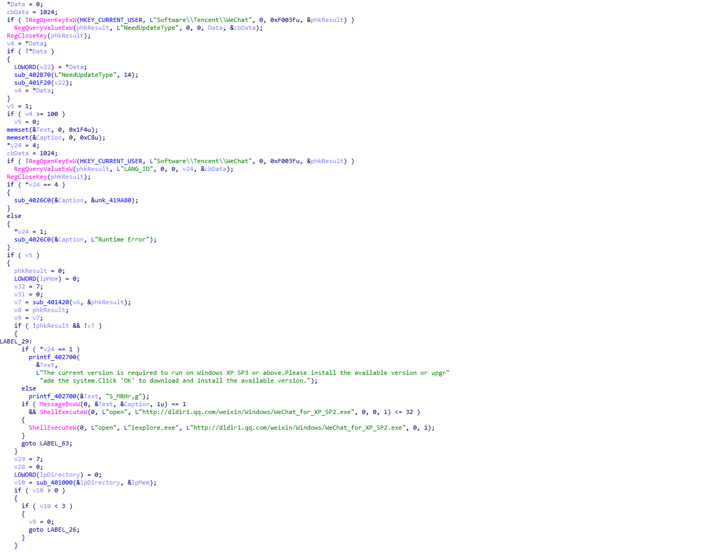
在往后就可以找到关键的函数，可以看到微信整体打开是调用WeChatWin.dll中的StartWachat函数的：
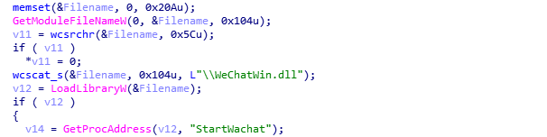
由于在Wechat.exe程序中没有找到有效的控制单个程序实例的函数，所以再看看WeChatWin.dll中的导入函数，可以看到导入了CreateMutexW函数以及FindWindow函数：
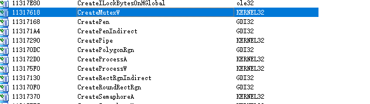
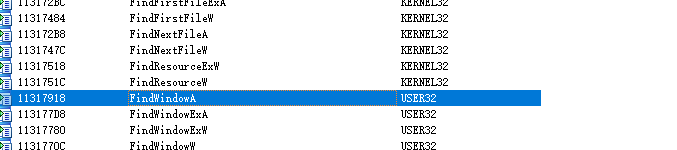
查看CreateMutexW函数上下文可以判断这个应该就是控制程序单个实例的关键函数：
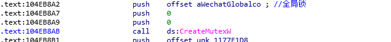
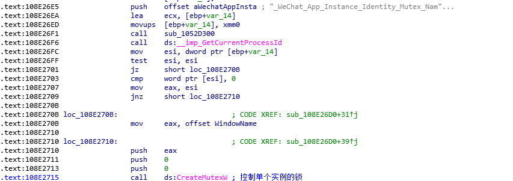
而调用FindWindowW函数的上下文就更加明显了：
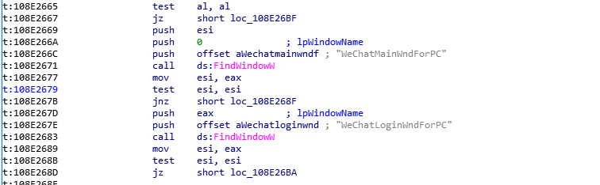
使用OD载入程序，在CreateMutexW下断点，触断后单步看。
设置的锁即控制单个实例的锁：
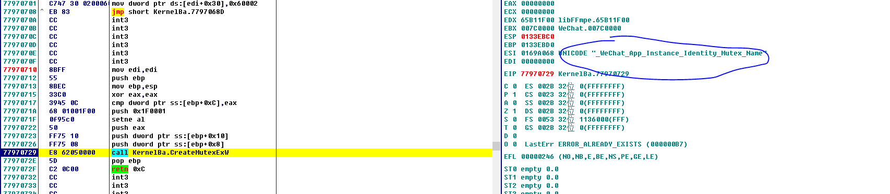
根据OD中最后三个字节”715”可以判断出这里的调用CreateMutexW就是上面的控制单个实例锁：
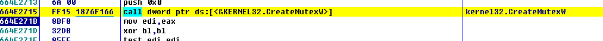
继续走找到一个大跳：
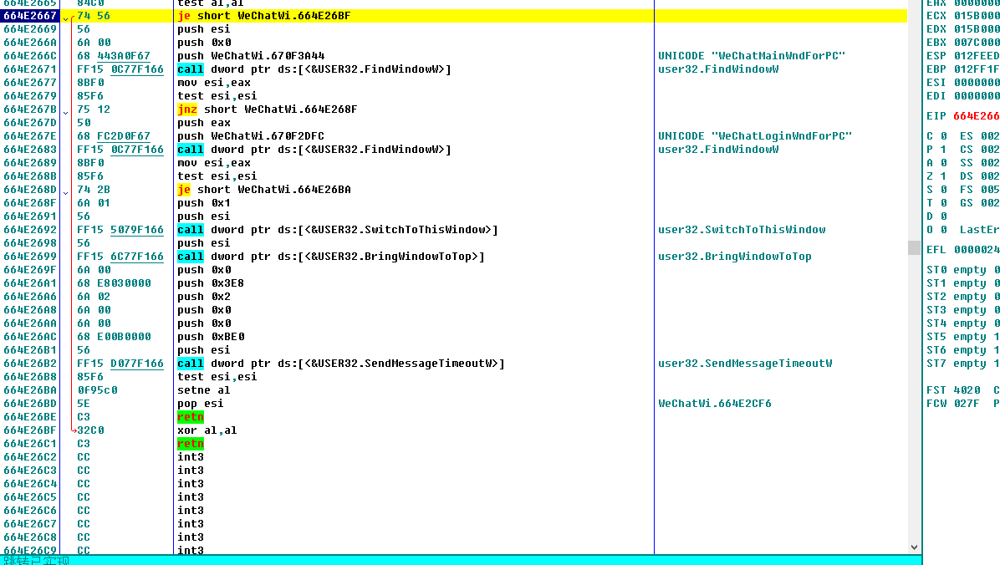
跳过的内容实则为判断有没有打开了微信的窗口：
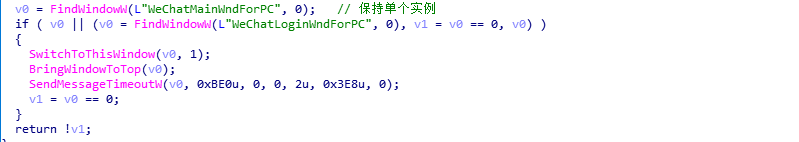
若打开了微信则跳转到该窗口，否则就函数返回进入微信启动的主要流程：
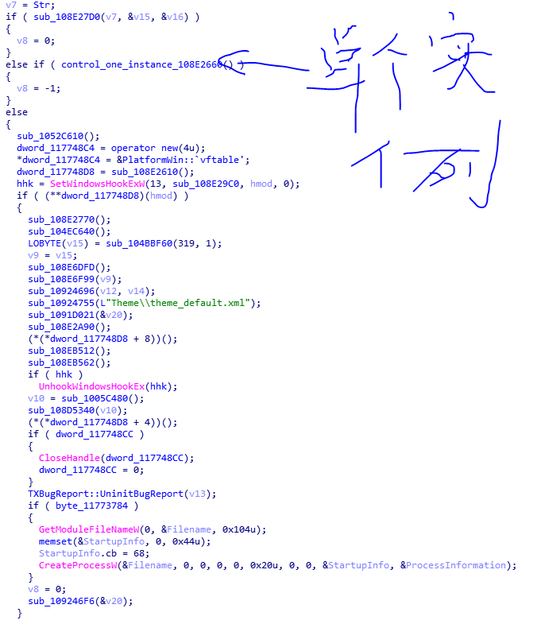
找到关键函数，那么爆破即可，将大跳的je指令改为jmp指令：
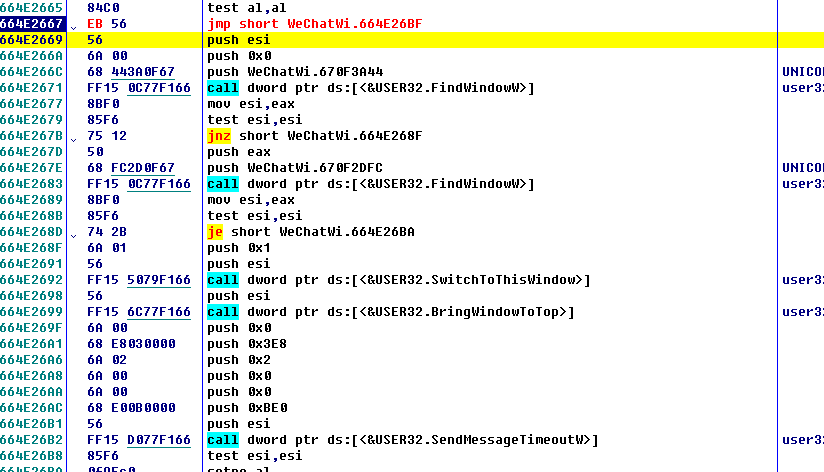
导出DLL，名字改为”WeChatWin.dll”就可以同时打开多个微信了：